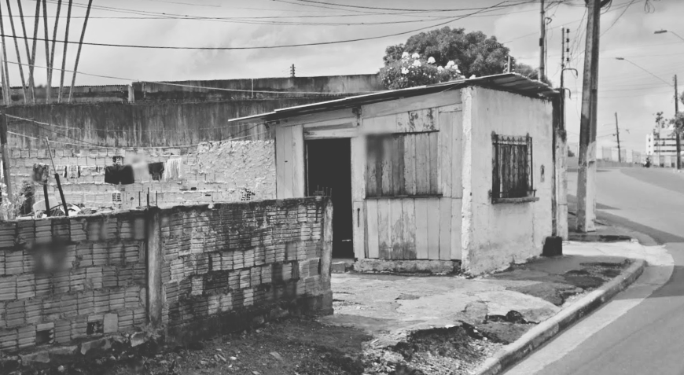

A segregação urbana que também pode ser entendida como a periferização
ou marginalização de determinados grupos sociais está presente em praticamente todo o território nacional, também
se entende por segregação urbana a criação de cortiços, favelas ou até mesmo habitações irregulares em áreas de invasões. Um exemplo destas chamadas habitações irregulares é este presente na foto tirada no bairro do Alvorada I Manaus/AM, onde mostra uma residência em uma área de invasão onde esse tipo de moradia e consequetemente a violência são realidades considaras comuns para quem as vive.